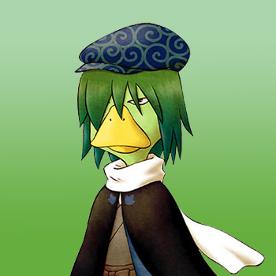

Kappa



El Kappa es un ser misterioso y mágico al igual que la diosa de la cosecha y los duende de la cosecha, el vive en el lago madre. Solo aparecerá ante ti después de que le arrojes un pepino al agua, pero el no habla mucho por lo que solo te mirara un rato y aceptará tu ofenda para luego regresará bajo el agua. Sólo aceptará pepino porque es lo unico que come por lo que el juego no te permitirá arrojar nada más al lago y solo podras arrojar un pepino por dia.
Si llegas a casarte co Kappa, el no vivirá dentro de la granja porque su hogar definitivo siempre es y sera el lago de la Colina Madre. El niño que tendras con el será regalado y tambien será un ser humano normal.
| Cumpleaños | 8 de primavera (primaria) o 9 de primavera (alternativa) |
|---|---|
| Amistad extra | (Ninguno) |
| Rival | (Ninguno) |
| Horario | Kappa no abandona la comodidad de su agua. Debido a que el agua del lago se congela durante el invierno, solo puedes darle pepinos a Kappa durante la primavera, el verano y el otoño. |
Preferencias de regalos
La mejor forma de mejorar la amistad y el afecto es siempre regalar las cosas que le gusta una vez por dia.
|
|
| (Ninguno) | |
| (Ninguno) | |
| (Ninguno) |
Requisitos de matrimonio
Kappa fue un candidato al desafío agregado a Harvest Moon: More Friends of Mineral Town, de manera similar a la diosa de la cosecha en la versión para niños del juego GBA. Kappa tiene los mismos requisitos de matrimonio en la nueva versión de Switch, pero con un requisito que si no se cumple, te impedirá por completo poder casarte con Kappa.
Cuando allas lanzado el regalo numero 20 al estanque de la Diosa (un regalo por día) hará que ella te pregunte si tienes el ojo puesto en alguien especial. Luego ella te presentará una lista de todos los candidatos disponibles a matrimonio donde debes elegir a Kappa de esa lista. Si llegas a elegir a cualquier otra persona de esta lista que no sea Kappa eso puede evitar que te cases con Kappa.
Dado que hay un 10% de posibilidades de perder 200 puntos de afectos si no le arrojas un pepino a Kappa todos los días, es posible que sus puntos disminuyan lentamente durante el invierno. Esto es fácil de recuperar cuando llega la primavera y puedes empezar a tirar pepinos al lago.
| Requisitos estándar | Al igual que los candidatos normales, Kappa requiere una cama grande dentro de su casa de campo. Sin embargo, nunca usará esta cama, ya que Kappa no vive dentro de su casa una vez casado. También necesitarás tener corazón rojo con él. |
|---|---|
| Quinto año | Debes estar en el año 5 o superior. |
| Lista completa de artículos enviados | Debes enviar al menos 1 de cada artículo del juego que se pueda enviar a través del contenedor de envío de Zack en tu granja. |
| Captura todos los peces | No es necesario pescar el tamaño más grande de cada pez, solo capturar todos los peces. |
| Encuentra todos los artículos | Descubre y envia todos los elementos de las minas del lago y de la casda excluyendo las estatuas decorativas que consigue en la mina. |
| Confiesa tu intención |
|
| Recoge los orbes de Kappa |
|
| Proponer matrimonio | Una vez que hayas completado todos los criterios de matrimonio, puedes proponer matrimonio arrojando una Pluma Azul al lago. Si acepta tu propuesta, 7 días después tendrás una ceremonia privada en la iglesia con los Duendes de la Naturaleza como invitados a la ceremonia. Si rechaza su propuesta, entonces no se han cumplido los requisitos. |